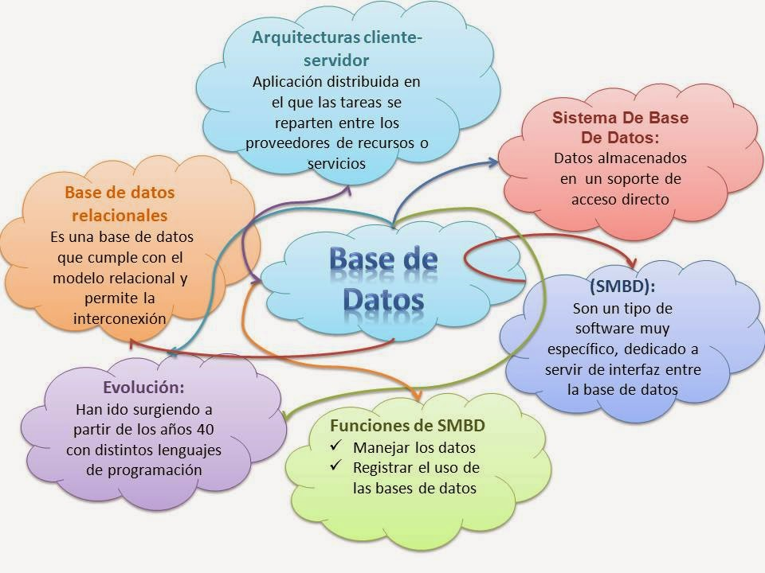
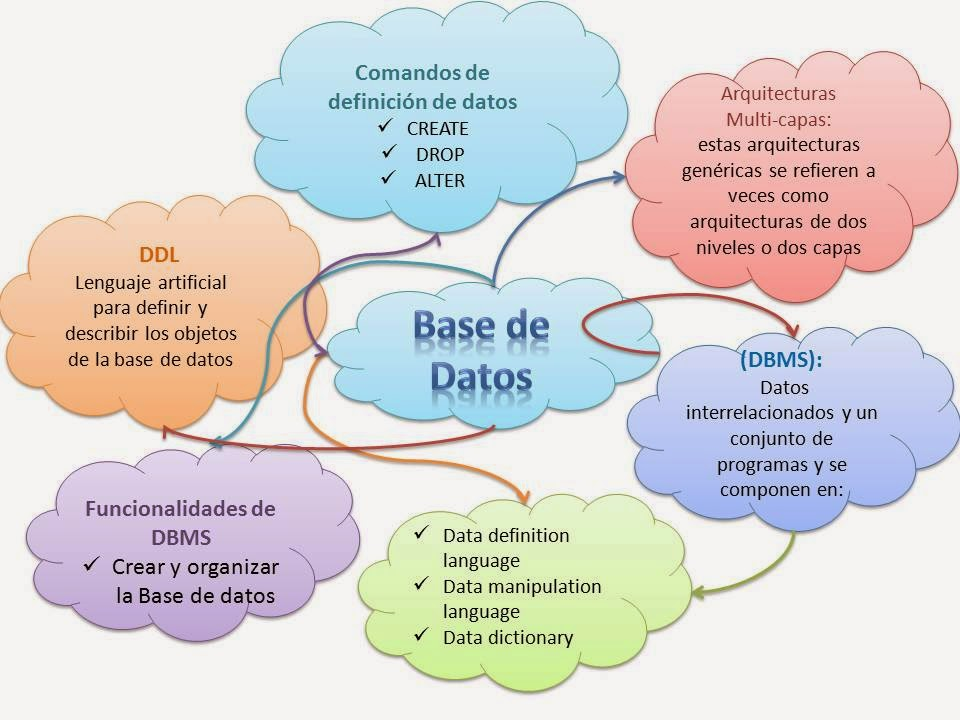
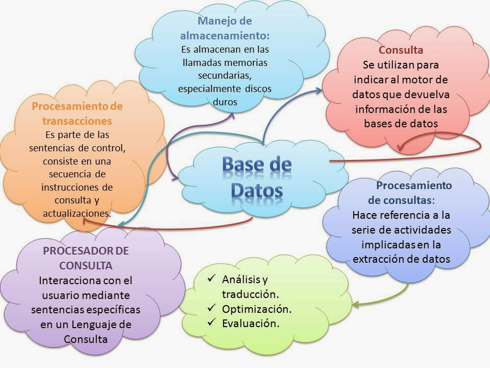

Componentes de SGBD o SMBD:
“Sistema Manejador de Base de Datos”
Las bases de datos generalmente funcionan en computadoras dedicadas de forma exclusiva a este campo. Por las prestaciones requeridas, generalmente funcionan en computadoras multiprocesador con abundante memoria. Para el almacenamiento de los datos puede contar con sistemas de disco propio (DAS), puede conectarse a una red de almacenamiento (SAN) o conectarse a un sistema de almacenamiento en red (NAS). Los SGBD se encuentran en el corazón de toda aplicación que maneje datos y se basan en sistemas operativos estándar para efectuar dichas funciones.
Un sistema de gestión de bases de datos (SGBD) es un conjunto de programas que permiten el almacenamiento, modificación y extracción de la información en una base de datos, además de proporcionar herramientas para añadir, borrar, modificar y analizar los datos. Los usuarios pueden acceder a la información usando herramientas específicas de interrogación y de generación de informes, o bien mediante aplicaciones al efecto.
Estos sistemas también proporcionan métodos para mantener la integridad de los datos, para administrar el acceso de usuarios a los datos y para recuperar la información si el sistema se corrompe. Permiten presentar la información de la base de datos en variados formatos. La mayoría incluyen un generador de informes. También pueden incluir un módulo gráfico que permita presentar la información con gráficos y tablas.

Componentes del SMBD
- El motor de la base de datos: acepta peticiones lógicas de los otros subsistemas del SGBD, las convierte en su equivalente físico y accede a la base de datos y diccionario de datos en el dispositivo de almacenamiento.
- El subsistema de definición de datos: ayuda a crear y mantener el diccionario de datos y define la estructura del fichero que soporta la base de datos.
- El subsistema de manipulación de datos: ayuda al usuario a añadir, cambiar y borrar información de la base de datos y la interroga para extraer información. El subsistema de manipulación de datos suele ser el interfaz principal del usuario con la base de datos. Permite al usuario especificar sus requisitos de la información desde un punto de vista lógico.
- El subsistema de generación de aplicaciones: contiene utilidades para ayudar a los usuarios en el desarrollo de aplicaciones. Usualmente proporciona pantallas de entrada de datos, lenguajes de programación e interfaces.
- El subsistema de administración: ayuda a gestionar la base de datos ofreciendo funcionalidades como almacenamiento y recuperación, gestión de la seguridad, optimización de preguntas, control de concurrencia y gestión de cambios.
Funciones Principales
- Establecer y mantener las trayectorias de acceso a la base de datos de tal forma que los datos puedan ser accesados rápidamente.
- Manejar los datos de acuerdo a las peticiones de los usuarios.
- Registrar el uso de las bases de datos.
- Interacción con el manejador de archivos. Esto a través de las sentencias en DML al comando del sistema de archivos. Así el Manejador de base de datos es el responsable del verdadero almacenamiento de los datos. Respaldo y recuperación.

Características
- Abstracción de la información: Los SGBD ahorran a los usuarios detalles acerca del almacenamiento físico de los datos. Da lo mismo si una base de datos ocupa uno o cientos de archivos, este hecho se hace transparente al usuario. Así, se definen varios niveles de abstracción.
- Independencia: La independencia de los datos consiste en la capacidad de modificar el esquema (físico o lógico) de una base de datos sin tener que realizar cambios en las aplicaciones que se sirven de ella.
- Redundancia mínima: Un buen diseño de una base de datos logrará evitar la aparición de información repetida o redundante. De entrada, lo ideal es lograr una redundancia nula; no obstante, en algunos casos la complejidad de los cálculos hace necesaria la aparición de redundancias.
- Consistencia: En aquellos casos en los que no se ha logrado esta redundancia nula, será necesario vigilar que aquella información que aparece repetida se actualice de forma coherente, es decir, que todos los datos repetidos se actualicen de forma simultánea.
- Seguridad: La información almacenada en una base de datos puede llegar a tener un gran valor. Los SGBD deben garantizar que esta información se encuentra segurizada frente a usuarios malintencionados, que intenten leer información privilegiada; frente a ataques que deseen manipular o destruir la información; o simplemente ante las torpezas de algún usuario autorizado pero despistado. Normalmente, los SGBD disponen de un complejo sistema de permisos a usuarios y grupos de usuarios, que permiten otorgar diversas categorías de permisos.
- Integridad: Se trata de adoptar las medidas necesarias para garantizar la validez de los datos almacenados. Es decir, se trata de proteger los datos ante fallos de hardware, datos introducidos por usuarios descuidados, o cualquier otra circunstancia capaz de corromper la información almacenada.
Respaldo y recuperación. Los SGBD deben proporcionar una forma eficiente de realizar copias de respaldo de la información almacenada en ellos, y de restaurar a partir de estas copias los datos que se hayan podido perder.
- Control de la concurrencia: En la mayoría de entornos (excepto quizás el doméstico), lo más habitual es que sean muchas las personas que acceden a una base de datos, bien para recuperar información, bien para almacenarla. Y es también frecuente que dichos accesos se realicen de forma simultánea. Así pues, un SGBD debe controlar este acceso concurrente a la información, que podría derivar en inconsistencias.
